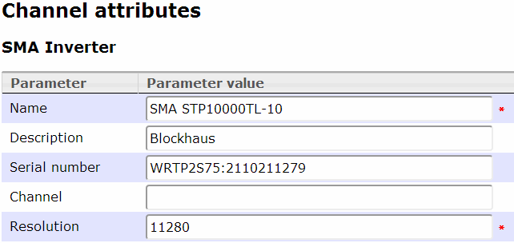
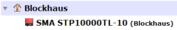
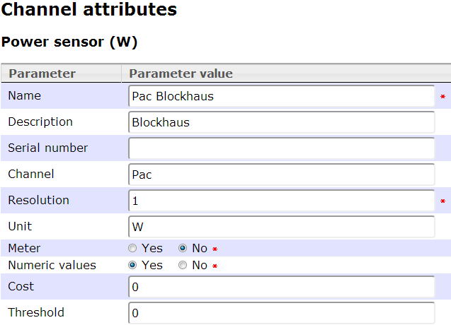
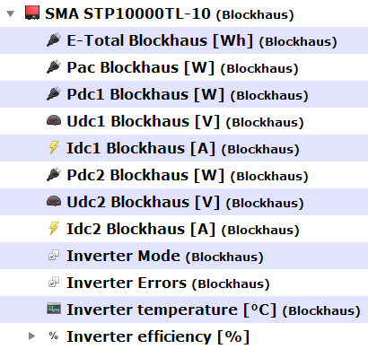

A special model to split Webbox RPC content into single channel values.
This model is in contrast to other grouping models writable but not readable!
Operation mode
The SMA Webbox model handles JSON outputs from Webbox RPC requests.
It scans the data and search its direct sub channels for matching channel definitions!
Setup
Create a channel for the Inverter

Please note:
● The serial number is used from external upload script to ask the SMA Webbox for the correct equipment.
● When the serial number changes after firmware updates, don't forget to update the serial number here!
Special use for this channel type is the resolution. By default, the resolution is only used for reading data.
But as you know, the SMA inverter is a not readable group... That is correct, BUT the attributes are always readable!
In this case, the resolution should held the installed power in watt peak on this inverter.
So it is possible to calculate the relative yield of the inverter (watt or watt hours per watt peak) by using a sub channel and this resolution.
(This is done for example by the Twitter update script)
Insert the inverter into the channel tree
If you have more than 1 inverter, it could make sense for a better overview to group them, e.g. by building or location.
Result:

Define the inverter channels according to your inverter
Create all further needed channels, e.g. PAC for a STP series inverter:

Please note: Use the exact channel name as your inverter delivers. This is needed to find the correct channel to store readings for!
Insert all the channels as sub channels of the inverter in the channel tree

A special case here is the Inverter efficiency.
Created with the Personal Edition of HelpNDoc: Easy EBook and documentation generator